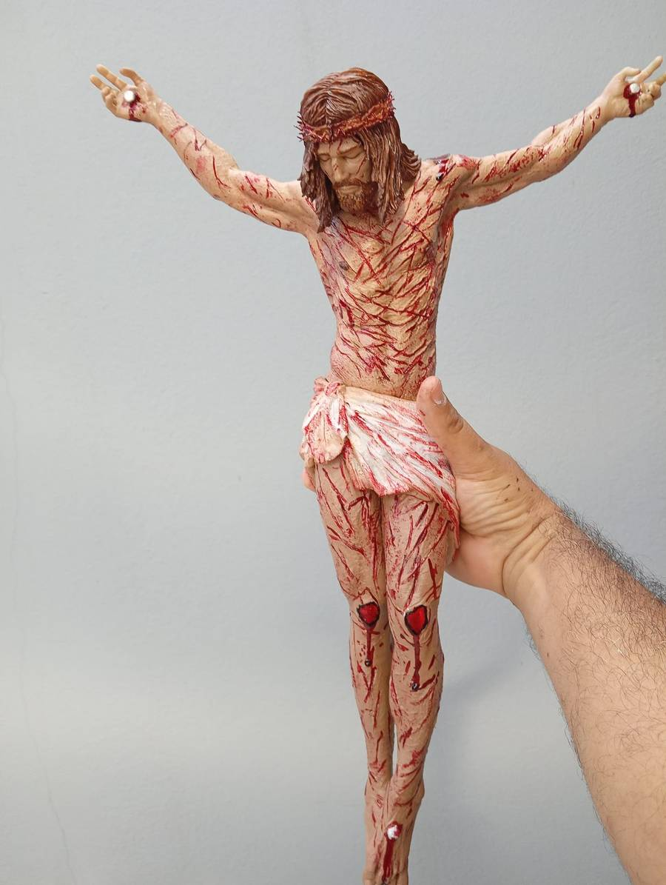

Art & Fé · Religião e Devoção
Um sinal de fé,
feito para ficar.
Crucifixos artesanais para a casa, a oração e a vida cotidiana.
Feito com cuidado
Matéria, forma
e significado.
Cada peça convida a contemplar o que permanece.
Art & Fé · Religião e Devoção
Objetos de fé
que encontram seu lugar.
A Art & Fé reúne crucifixos artesanais que aproximam a devoção dos espaços do dia a dia. Peças para contemplar, presentear e manter por perto.
Conheça o catálogo ↘Peças artesanais
Crucifixos em destaque
Consulte disponibilidade, dimensões e valor de cada peça pelo WhatsApp.

DETALHE DE UMA PEÇA ARTESANALTrabalho artesanal
O cuidado também
faz parte da devoção.
Forma, acabamento e expressão se encontram em cada crucifixo. As fotografias mostram peças reais da Art & Fé; fale conosco para saber mais sobre cada modelo.
Converse sobre uma peça ↗Art & Fé
Encontre sua
próxima peça.
A compra e o pagamento são feitos diretamente nas plataformas. Use os botões para buscar crucifixos artesanais ou abra o anúncio específico quando os links forem adicionados.
Consultar pelo WhatsAppEstamos por aqui
Vamos encontrar
a peça certa?
Fale com a Art & Fé para consultar modelos, disponibilidade, dimensões e valores.